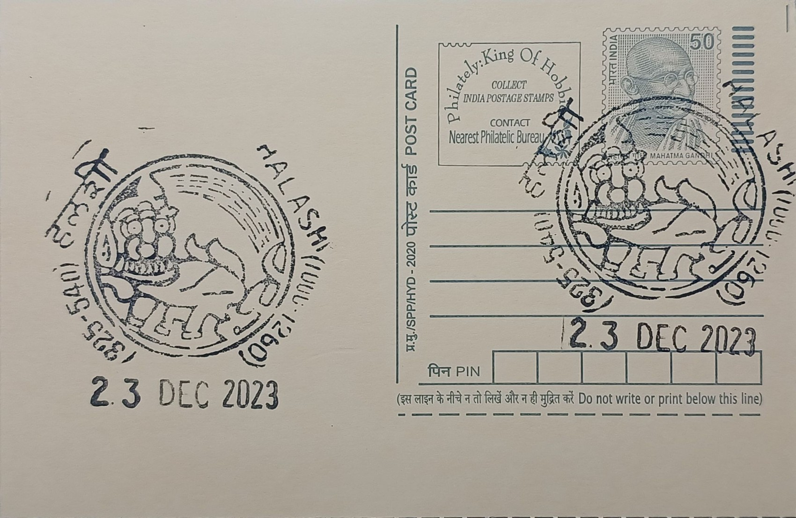

Royal Logo of Kadamba
ಕದಂಬರ ರಾಜಲಾಂಛನ


The royal emblem of the Kadambas, most often a rampant or seated lion, traces to the dynasty's founding tradition that Mayurasharma, a Brahmin scholar turned warrior, broke away from Pallava authority around 345 CE and established an independent kingdom near Banavasi, said to be named after a kadamba tree growing beside a Shiva shrine at the site. The lion motif, frequently paired on coinage with a lotus, became visual shorthand for this founding act of self-rule, stamped onto gold issues and seals as a declaration that the new line answered to no overlord, a claim early Kadamba rulers pressed by styling themselves dharma-maharajas governing in their own right from Vaijayanti, as Banavasi was then known.
As the royal crest of one of Karnataka's earliest indigenous ruling houses, the lion emblem carries significance well beyond heraldry: it marks the Kadambas as the first major dynasty to administer the region in Kannada rather than exclusively in Sanskrit, issuing land grants and inscriptions in the local tongue and thereby giving Kannada its earliest institutional standing as a language of governance. Kadamba gold coins bearing the lion, alongside the more common padmatanka or lotus-type issues, circulated across the dynasty's Konkan and northern Karnataka territories and are prized today by numismatists as some of the earliest dated coinage struck by a native Karnataka power, distinguishing the Kadambas from contemporaries who continued to mint in imitation of Roman or Satavahana prototypes.
The emblem's association with Halasi, the post office's namesake locality, rests on the Kadambas of Halasi, a later branch descended from the Mukkanna Kadamba line that governed the area as a secondary and then principal seat between roughly the ninth and thirteenth centuries after the main Banavasi line's decline. Halasi itself is traditionally remembered as a town of a hundred temples, a number reflecting the scale of Kadamba patronage rather than a literal surviving count, with structures such as the Bhuvaraha Narasimha temple, built under the Kadamba ruler Shivachitta, exhibiting the star-shaped platform and stepped pyramidal Kadamba Nagara shikhara style that the dynasty favoured and that still distinguishes the site's architecture from neighbouring Chalukyan and Hoysala work.
A distinguishing feature of the Halasi Kadambas' rule was its religious plurality: copper-plate and stone inscriptions recovered from the town record grants not only to Shaiva and Vaishnava shrines but also to a Jain basadi founded under Kadamba patronage, reflecting a court that moved between faiths rather than enforcing a single one, a pattern the dynasty's lion-and-lotus coinage itself echoes by combining a martial royal symbol with the lotus associated with Vaishnava and Jain iconography alike. This confluence made Halasi, during the Kadamba centuries, a meeting point of Jainism, Shaivism and Vaishnavism as well as a functioning commercial centre, its temple precincts doubling as records offices where royal land and tax grants were inscribed for public reference.
The site's inscriptions and temple remains are today documented and protected under the Archaeological Survey of India and the Karnataka Department of Archaeology, Museums and Heritage, which lists several of Halasi's shrines, including the Bhuvaraha Narasimha and Suvarneshwara temples, as centrally or state-protected monuments, while the Kadamba royal lion continues to circulate in modern Karnataka through its adoption as the logo of the state-run Kadamba Transport Corporation in neighbouring Goa. For the post office at Halashi, the pictorial cancellation depicting this emblem functions as a direct territorial marker, linking a working postal counter in a small Belagavi taluk village to the specific historical claim that organised, Kannada-administered kingship in the region began under this dynasty's banner.
| Date of Introduction | May 4, 1993 |
|---|---|
| Address | Branch Postmaster, |
| Halashi BO, | |
| Belagavi (dt.), Karnataka - 591120. |